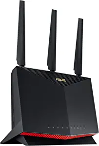
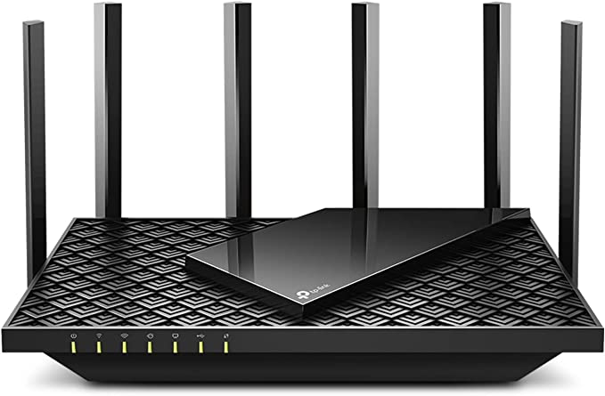
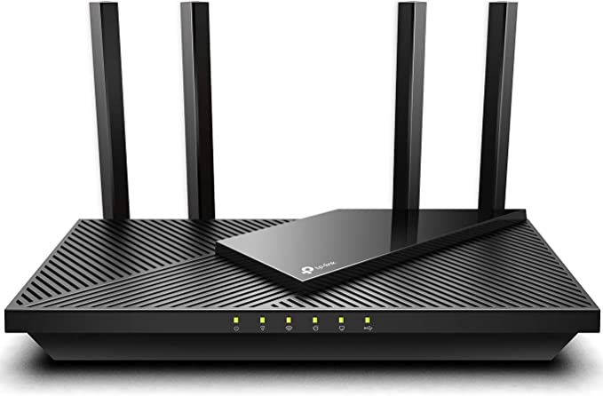
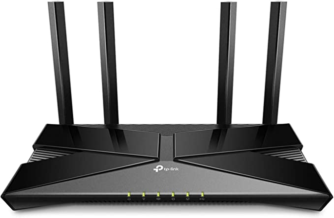
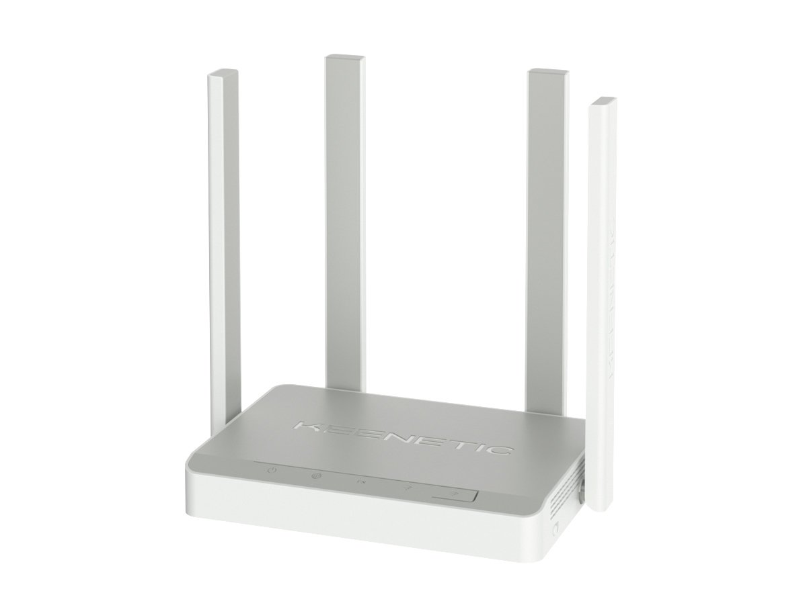

Improve your Internet connection
3 primary reasons you're experiencing the issues with Internet connection (connectivity, stability, speed).
Reason 1: An old computer
Yeah, you may think that you have issues with Internet connection whereas in reality it's a 10-year old computer that cannot handle even basic tasks. The older the computer – the older are the hardware and the OS. For example, Chrome updates its browser almost daily. They add new features Also, if in addition to that your router is also 10-years old, connection problems are just guaranteed.
Old computer – Common issues
- Delayed response of the interface in general
- Frequent system error messages
- Insufficient memory with hangs of the system
- Video freezes
- Everything takes forever
What to do?
- ⭐️ Buy a new computer. It will be faster, with newer version of OS, software and hardware
- Or clean it up from garbage and viruses. Google the tutorials or go to a computer repair shop
Reason 2: Low quality connection from provider
The hardest to troubleshoot and the most annoying one. You definitely
Provider – Common issues
- Intermittent connection issues
- Unstable connection speed
- Video freezes
- Downloads interruption
- High ping and packet loss in games
What to do?
- ⭐️ Use Internet Connection Monitor (ICM) or similar software on your laptop close to the router to diagnose the connection drops and ensure it's actually a provider issue
- ⭐️ Change your Internet provider
- Ask your provider support crew to help with the connection stability, providing them a log of disconnects that can be logged by ICM. It may be a waste of time, since the support may just suggest you some crappy advice like rebooting your computer or something similar
Reason 3: Low quality router
Apart from a modern computer, your router should not be a $15 box of microchips. A lot of issues with Wi-Fi are either related to the low performance of the router's wireless subsystem in crowded areas or the weak signal strength. By crowded I mean when there are multiple routers nearby that interfere with the signal of your own router. You'd want to have a modern router that at least supports Wi-Fi 5. If you're not tech savvy, just pick a decent $100-$150 TP-Link or Asus.
Router – Common issues
- Wi-Fi disconnects periodically
- Wi-Fi connections becomes worse over time
- Wi-Fi speed is very low even in a close proximity to the router
- Downloads interruption
What to do?
- ⭐️ Buy a new router
- Upgrade router's firmware
- Reposition router
- Adjust Wi-Fi settings such as Wi-Fi channel
- Restart router frequently
Top 5 router options to buy in 2022
- ASUS AX5700 WiFi 6 Gaming Router (RT-AX86U) – $269.99
- TP-Link AX5400 WiFi 6 Router – $154.99
- TP-Link AX1800 Wi-Fi 6 Router – $89.99
- TP-Link AX1500 Wi-Fi 6 Router – $66.98
- Keenetic Speedster – €49.99, Europe only
Several useful articles that may help you fix the Internet connection problems
© Dmytro Shcherbyna 2014-2022